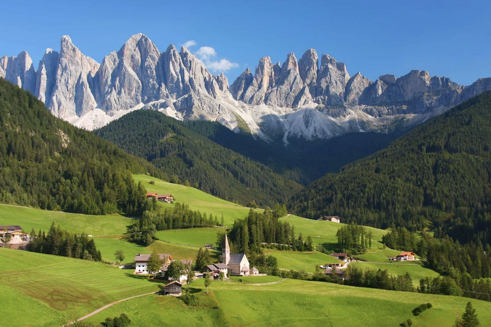

洛蒙湖（Loch Lomond）英國最大淡水湖；高地清空（Highland Clearances）18世紀農民被迫遷離；傑科拜特起義（1745年）卡洛登戰役後蓋爾文化大滅絕。
🍺 必吃：Haggis 雜碎布丁 · Irn-Bru 橙色汽水 · 單一麥芽威士忌
蘇格蘭第一條官方長距離步道（1980年），全長 154 km，從 Milngavie 至 Fort William。此行走最精彩的核心段：Bridge of Orchy → Kingshouse → Kinlochleven，翻越全線最高點魔鬼階梯（539m）。
| 日期 | 路段 | 距離 | 爬升 | 時間 |
|---|---|---|---|---|
| 8/14 | Balmaha → Conic Hill 往返 | 7.8 km | +361m | 2.5–3h |
| 8/15 | Bridge of Orchy → Kingshouse | 19 km | +350m | 5–6h |
| 8/16 | Kingshouse → Kinlochleven | 14.5 km | +500m | 4–5h |
💡 Loch ch 唸喉音 /kh/（類德語 Bach），不是 /k/。
| 業者 | 出發 | 抵達 |
|---|---|---|
| Citylink 914 | 06:40 | 08:37 |
| Ember E5 | 08:00 | 09:44 |
| Citylink 915 | 08:50 | 10:37 |
深夜桃園起飛，在杜拜（Dubai）轉機後飛抵格拉斯哥，搭機場巴士進市中心。
行李寄放後前往 Balmaha（巴爾馬哈）健行 Conic Hill（科尼克山）來回 7.8km，爬升 361m。山頂俯瞰洛蒙湖（Loch Lomond）全景。
穿越廣袤的 Rannoch Moor（拉諾克荒原）——英國最荒涼高沼地，面積 130km²。19 km · 5–6h · 爬升 350m
翻越 Devil's Staircase（魔鬼階梯，539m）全線最高點，Glencoe 峽谷盡收眼底。下山至 Kinlochleven 搭巴士。14.5 km · 4–5h
Glenfinnan Viaduct（格蘭芬南高架橋）建於 1901 年，21座拱橋，《哈利波特》霍格華茲列車取景地。Glenfinnan Monument 為 1745 年傑科拜特起義紀念碑。
搭火車至英國最偏遠有人車站 Corrour（科勞爾）——四周無公路。步行 1.5km 抵達太陽能供電的 Loch Ossian Youth Hostel，翡翠色湖水倒映高山。
搭火車返抵格拉斯哥，取回 8/14 寄放的大行李，洗烘衣物，明日飛冰島。
冰島位於北大西洋中脊上，超過 130 座火山，地熱泉（geyser 一詞源自 Geysir）遍布。人口僅 37 萬，雷克雅維克是全球最北首都。
💡 字母：þ=th（think）；ð=th（the）；á=/ow/；ö=ö（嘴圓發）
🍲 必吃：Skyr 高蛋白優格 · 熱狗（remoulade 醬）· Kjötsúpa 羊肉湯
| 天 | 路段 | 距離 | 地形特色 |
|---|---|---|---|
| D18/22 | Landmannalaugar→Hrafntinnusker | 12km +490m | 彩色流紋岩、地熱 |
| D28/23 | Hrafntinnusker→Hvanngil（Alftavatn） | ~20km +200m | 天鵝湖、黑色砂礫 |
| D38/24 | Hvanngil→Emstrur峽谷 | 15km +200m | 火山峽谷地形 |
| D48/25 | Emstrur→Þórsmörk | 15km +100m | 過河、樺木林 |
| D58/26 | Þórsmörk→Baldvinsskáli | 16km +900m | 2010年熔岩帶 |
| D68/27 | Baldvinsskáli→Skógar | 8km 全下坡 | 23條瀑布、Skógafoss |
💡 冰島語重音永遠在第一音節。ll 在字中常唸 /tl/。
飛往冰島！入境後搭機場接駁至市中心青旅。
Hallgrímskirkja 教堂上塔俯瞰全城 · Sun Voyager海濱雕塑 · Bæjarins Beztu 熱狗 · Harpa 音樂廳。
高地巴士 4.5h 後抵達 Landmannalaugar（蘭德曼納洛伊加）——五彩流紋岩山丘，有天然地熱溫泉。開始 Laugavegur！12km · 4–5h · +490m
全程最長。翠綠 Alftavatn（天鵝湖）倒映天空，後段黑色火山砂礫強風。~20km · 6–9h
Emstrur Canyon（Markarfljótsgljúfur）——冰島版小大峽谷，黑色熔岩絕壁。15km · 5–6h
進入翠綠的 Þórsmörk（索斯默克）樺木林，完成 Laugavegur 55km！沿途多處過河，謹慎。15km · 5–6h
穿越 2010 年 Eyjafjallajökull 火山噴發的新生熔岩帶——地球最年輕的地形。16km · 6–8h · +900m
23條瀑布相伴下山！Skógafoss（60m）晴天可見彩虹，完成6天77km縱走！8km · 3–4h（全程下坡）
踏上 Vatnajökull（瓦特納冰川），配冰爪、冰斧探索藍冰世界。09:00–14:00。下午搭巴士回首都，取回 BOUNCE 寄放大行李。
Laugardalslaug 戶外溫泉泳池（冰島人日常）· 採買伴手禮。注意：明日手提限 6 kg！
18個島嶼，17個有人居住，人口僅 54,000。丹麥自治領地。Enniberg 懸崖是歐洲最高垂直海蝕崖（754m）。草皮屋頂（turf roof）是維京工法延續。
🐦 角嘴海鸚（Puffin）5–8月在 Mykines 大量繁殖。
🍖 必吃：Ræst 發酵羊肉 · 新鮮龍蝦
Streymoy：首都 Tórshavn。Vágar：機場 + Sørvágsvatn 海上懸湖。Mykines：角嘴海鸚聖地。Kalsoy：007島 Kallur 燈塔。Eysturoy：Gjógv 峽谷村 + Funningur 古教堂。
💡 ø唸/ö/；gj唸/y/；á唸/ow/。
飛往法羅群島！手提行李僅限 6 kg（FI300 法羅航線），務必遵守。落地後立即購買 SIM 卡，再搭巴士進首都 Tórshavn。
適應環境，踏查 Streymoy 中央山區，感受法羅特有的玄武岩岩壁與大西洋壯景。
Sørvágsvatn：視角造成的光學錯覺，湖水看似懸浮在海面上。Mykines：大量 Puffin 在崖邊繁殖，可近距離拍攝！
Klakkur（413m）：Klaksvík最高點，俯瞰東法羅島群。Kalsoy：Kallur 燈塔以海角絕壁著稱。
Tjørnuvík：最北端古漁村，黑沙灘，「巨人與女巫」海蝕柱（Risin og Kellingin）。刀鋒山脊（Blade Ridge）走在刀刃般窄脊，兩側萬丈深淵。
Funningur：石砌古教堂（1847年）。Gjógv：National Geographic 評為世界最美小村，天然海溝，彩色划艇屋。
Tinganes 舊城區：紅色木造老建築、草皮屋頂。購買法羅手工編織羊毛製品 · 品嚐 Ræst 發酵羊肉。
重訪最喜歡的角落，港邊餐廳享用法羅海鮮晚餐，向北大西洋秘境道別。
建於休眠火山岩丘，超過 2,000 年歷史。Old Town 舊城+New Town 新城共同列入 UNESCO 世遺（1995）。Edinburgh Castle 收藏蘇格蘭皇冠珠寶 & 命運之石。
🥃 必吃：Haggis 雜碎布丁 · Cullen skink 鹹鱈魚濃湯 · 單一麥芽威士忌
🗣 乾杯：Slàinte Mhath（/ SLAN-cha va /）
飛越北大西洋，飛抵蘇格蘭古都。入境後沿 Royal Mile 散步感受千年城市氛圍。
Arthur's Seat（251m）：死火山，往返約 2h，全城 360° 景觀。蘇格蘭國家博物館免費入場。Scotch Whisky Experience 互動導覽。
都柏林（Baile Átha Cliath）建於維京時代（9世紀），1922 年愛爾蘭共和國獨立後成為首都。Book of Kells（凱爾斯之書）西元 800 年手抄福音書，是西方最精美的中世紀手抄本。Guinness 由 Arthur Guinness 1759 年創立。
🗣 乾杯：Sláinte（/ SLAWN-cha /）
飛往愛爾蘭首都，與友人（大大）會合。⚠️ Ryanair 隨身：40×30×20 cm 以內。
多洛米提（Dolomiti）2009年 UNESCO 世界自然遺產。2.3億年前為熱帶珊瑚礁，受板塊抬升。Enrosadira：日出日落時岩石染橘紅玫瑰色。南提羅爾義大利語、德語、拉丁語三語並用。
🍲 必吃：Speck 燻火腿 · Schlutzkrapfen 菠菜起司餃 · Knödel 麵包丸子 · Strudel 蘋果捲
Via Ferrata（義大利文「鐵路」）利用固定在岩壁的鐵梯、鐵棒、鋼纜攀登，起源於一戰義大利軍隊。裝備（通常由行程提供）：安全帶 · 頭盔 · Y型緩衝連結繩。難度1（初級）~6（高難度），此行預計 2–3 級。
💡 義大利語 c 在 i/e 前唸 /ch/；gn 唸 /ny/（Gnocchi→你歐基）。
都柏林白天吃喝，傍晚飛義大利，深夜 23:55 抵達威尼斯機場（VCE）。
行李寄放後進水都：聖馬可廣場 · 嘆息橋 · 里亞托橋 · 貢多拉水道。13:00 取行李搭 Cortina Express 進多洛米提。
在 Cortina d'Ampezzo（科爾蒂納達姆佩佐）進行 Via Ferrata，配安全帶、頭盔攀爬固定鐵梯鋼纜路線。Cortina 曾是 1956 年冬奧主辦地。
Lago di Braies（布萊耶斯湖）：翡翠色湖水倒映石灰岩峭壁，號稱「多洛米提的珍珠」，環湖 3.5km。San Candido：1143年羅馬式大學教堂。
三峰山（2,999m）：多洛米提最具代表性的三根孤峰，環形約 10km / 3–5h。提早抵達 Rifugio Locatelli（2,405m）入住。
下山取行李，轉移至西多洛米提核心小鎮 Ortisei（奧爾蒂塞）——Val Gardena（瓦爾加德納）谷地的傳統木雕工藝小鎮，接下來三天纜車健行的基地。
Rasciesa（2,175m）俯瞰 Val Gardena 谷地。Alpe di Siusi（Seiser Alm）：歐洲最大高山牧場（56km²），秋天金黃草地配多洛米提尖峰。
Sassolungo（Langkofel，3,181m）：垂直尖塔形孤峰，多洛米提最具戲劇性地形之一。繞峰路線欣賞多種角度。
Seceda（賽切達，2,519m）：Val Gardena 最具代表性的山脊線，陡峭岩壁與翠綠草坡極度戲劇化對比。傍晚等 Enrosadira 玫瑰效應（岩石染橘紅色）。
前往 Val di Fassa（法薩山谷），健行至 Rifugio Santner（桑特那山口，2,734m）。健行約 3–5h，爬升 800–1,000m。
穿越 Alpe di Siusi 高原，纜車下 Ortisei，搭車往 Bolzano（波札諾）。必訪考古博物館，館藏 5,300 年前的冰人 Ötzi——全球保存最完整的史前人類木乃伊。
搭乘 Frecciarossa（紅箭高鐵）穿越 Po Valley 平原抵達時尚之都米蘭（Milano）。傍晚在 Navigli 運河區閒逛，享用最後義式晚餐。